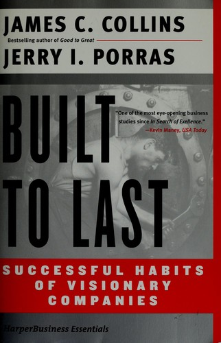

吉姆·柯林斯（Jim Collins）是美国著名商业研究者与作家，毕业于斯坦福大学，曾任教于斯坦福大学商学院；杰里·波拉斯（Jerry I. Porras）是斯坦福大学商学院组织行为学荣休教授。两人合作历时六年，在斯坦福大学商学院完成了一项大规模研究，系统考察了什么使某些企业能够历经数十年风雨、持续跑赢市场。研究成果于1994年以《基业长青》为题出版，至今已售出数百万册，被《经济学人》、《哈佛商业评论》等媒体广泛列为最具影响力的商业著作之一，并催生了柯林斯此后包括《从优秀到卓越》在内的一系列研究。
本书的研究方法论本身就颇具说服力：柯林斯与波拉斯在每一个主要行业中各选取一家"高瞻远瞩公司"（visionary company），并将其与一家同期同行中表现良好但未达到传奇地位的"对比公司"进行系统比较，共研究了十八对企业。这些高瞻远瞩公司——包括3M、波音、迪士尼、通用电气、惠普、强生、默克、摩托罗拉、宝洁、索尼和沃尔玛等——自1926年以来的股票回报率是大盘的十五倍以上。这一发现直接指向一个核心问题：是什么机制让这些企业能够跨越数代领导人与多轮经济周期，维持卓越的长期绩效？
两位作者的研究颠覆了若干广为流传的商业迷信。第一，高瞻远瞩公司不一定需要魅力型领袖——它们赖以为继的是系统与文化，而非个人。第二，它们不一定开创于一个绝妙的商业创意——沃尔玛最初不过是一家小镇杂货铺，惠普在成立之初甚至不清楚自己要做什么。第三，它们并非在利润与价值观之间做权衡——事实上，对核心价值观的坚守与卓越的长期盈利能力往往正相关，而非相互矛盾。书中提炼出的几个关键概念——"核心意识形态"（Core Ideology）、"大胆的有挑战性目标"（BHAG）、"兼容并蓄"（Preserve the Core / Stimulate Progress）——至今仍是战略规划领域最常被引用的框架之一。
《基业长青》在出版后迅速成为MBA课程的必读文本，并被《财富》杂志评为二十世纪最具影响力的商业书籍之一。管理学界将其视为用实证方法研究企业卓越性的奠基之作。对于企业家、管理者以及长期价值投资者而言，本书提供的不是一时成功的捷径，而是对那些能够穿越周期、积累真正持久价值的组织的深层规律的系统揭示。即便其中部分案例企业在此后数十年间历经起伏，这些底层规律本身的洞察力并未因此减损。